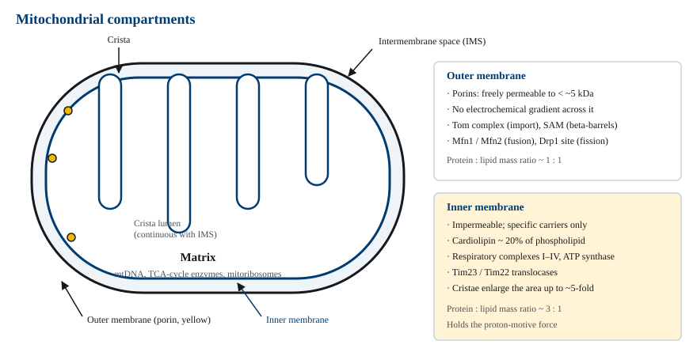
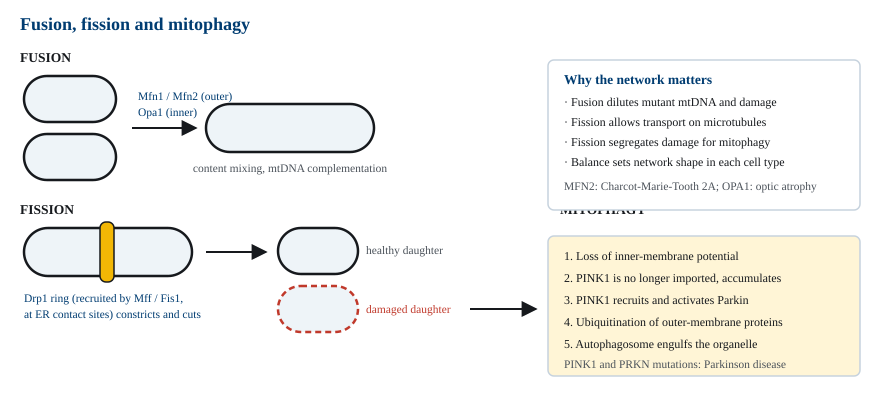
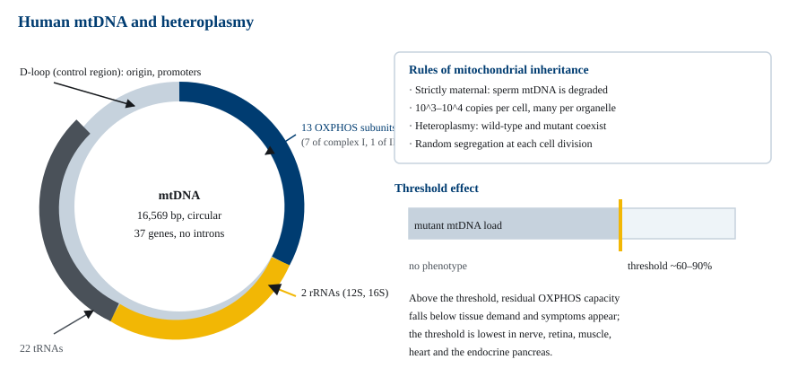
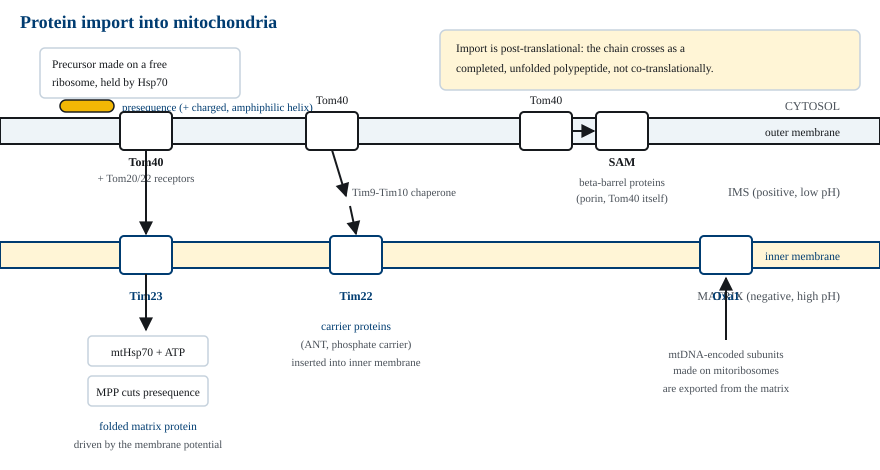
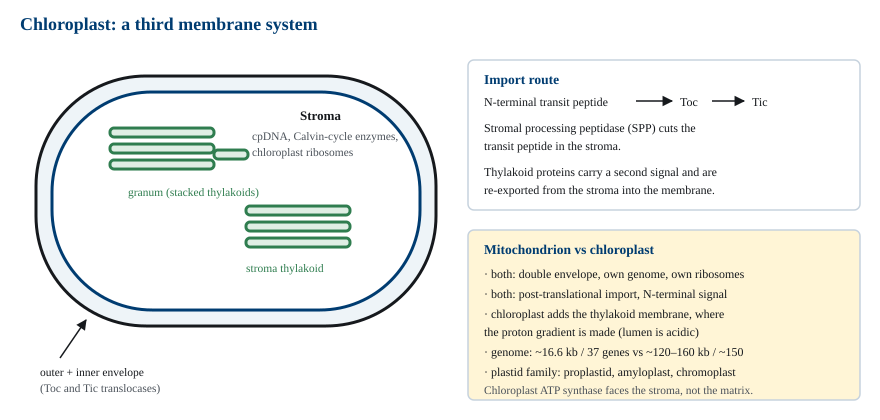
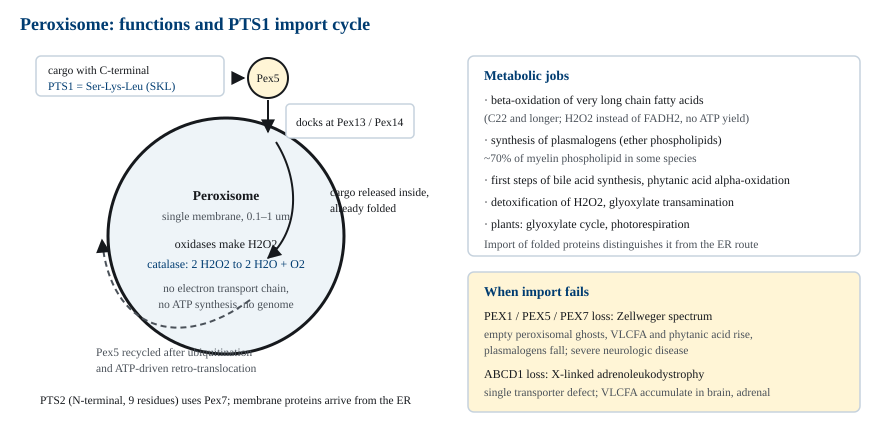

M01-W10-L01 · 인체일반생물학과 기초세포생물학
미토콘드리아·엽록체·퍼옥시좀의 구조와 기능
Mitochondria, Chloroplasts and Peroxisomes
학습목표
- 미토콘드리아 두 막의 투과성·지질 조성·단백질 조성 차이를 각 막의 기능과 연결해 설명한다.
- Cristae의 구조와 crista junction의 배치가 oxidative phosphorylation 용량에 기여하는 방식을 설명한다.
- 미토콘드리아 융합과 분열을 담당하는 단백질을 들고, 네트워크의 균형이 손상 단백질 제거에 필요한 이유를 설명한다.
- 사람 mtDNA의 크기·유전자 수·유전 양식을 쓰고, heteroplasmy와 threshold effect로 표현형의 조직 특이성을 설명한다.
- Tom·Tim23·Tim22·SAM·Oxa1의 역할을 구분하고, 어느 단계가 막전위를 필요로 하는지 판정한다.
- 엽록체의 세 번째 막계와 transit peptide 경로를 미토콘드리아와 비교해 설명한다.
- 퍼옥시좀의 대사 기능 네 가지를 쓰고, PTS1 수입 경로의 결손이 일으키는 생화학적 변화를 예측한다.
선수지식
- M01-W09-L02 생체에너지: 자유에너지와 ATP — 산화환원 전위, 양성자 기울기, 짝반응
- M01-W09-L03 산화적 이화와 oxidative phosphorylation — 호흡 복합체의 배열과 ATP synthase
- M01-W05-L02 생체분자와 막의 구조 — 인지질 이중층, 막단백질의 배치
- M01-W06-L02 분자생물학의 기초 — 전사와 번역의 기본 단계
강의 구성
- 1. 에너지 소기관의 공통 설계와 내공생 기원
- 2. 미토콘드리아의 두 막과 네 구획
- 3. 미토콘드리아 네트워크: 융합과 분열
- 4. 미토콘드리아 유전체와 그 유전 양식
- 5. 핵 암호화 단백질의 수입과 분류
- 6. 안쪽막을 통한 대사물 수송
- 7. 엽록체: 세 번째 막계와 비교 설계
- 8. 퍼옥시좀의 대사 기능과 단백질 수입
1. 에너지 소기관의 공통 설계와 내공생 기원
진핵세포에는 두 겹의 막으로 둘러싸인 소기관이 둘 있다. 미토콘드리아와, 식물·조류의 엽록체다. 두 소기관은 기능이 다르지만 설계가 같다. 자체 유전체를 갖고, 자체 리보솜으로 일부 단백질을 만들고, 두 막 사이에 양성자를 밀어 넣어 만든 전기화학적 기울기로 ATP를 합성한다. 세 번째 소기관인 퍼옥시좀은 막이 한 겹이고 유전체가 없으며 ATP를 만들지 않지만, 이 수업에서 함께 다루는 이유가 있다. 단백질을 받아들이는 방식이 소포체 경로와 전혀 다르기 때문이다.
앞 장에서 다룬 소포체·골지체 경로에서는 단백질이 번역되는 동안 막을 통과한다(co-translational translocation). 반면 미토콘드리아·엽록체·퍼옥시좀의 단백질은 세포질의 유리 리보솜에서 완성된 다음에 수입된다(post-translational import). 퍼옥시좀은 한 걸음 더 나아가 이미 접힌 단백질을 통째로 받아들인다. 이 차이가 세 소기관을 하나의 장으로 묶는 근거다.
두 겹 막 소기관의 기원은 내공생설(endosymbiotic theory)로 설명된다. 미토콘드리아는 호기성 α-proteobacterium이, 엽록체는 광합성을 하는 cyanobacterium이 숙주 세포 안에 들어가 공생하면서 자리 잡은 것이다. 근거는 구조와 서열 양쪽에 있다.
- 유전체가 원형이고 intron이 없으며 유전자가 조밀하게 배열되어 있다. 세균 유전체의 특징이다.
- 리보솜이 세균형에 가깝다. 그래서 chloramphenicol, tetracycline, 그리고 aminoglycoside 계열 항생제가 미토콘드리아 번역을 함께 억제한다.
- 내막의 지질 조성이 세균 원형질막과 닮아 있고, 특히 cardiolipin은 세균과 미토콘드리아 내막에만 많다.
- 서열 계통분석에서 mtDNA 유전자가 α-proteobacteria 분지 안에 들어간다.
내공생 이후 대부분의 유전자는 숙주 핵으로 이동했다. 사람 미토콘드리아에는 약 1,000~1,500종의 단백질이 있는데 그중 mtDNA가 암호화하는 것은 13종뿐이다. 나머지는 모두 핵 유전자의 산물이고, 그래서 수입 장치가 소기관 생물학의 중심 문제가 된다.

2. 미토콘드리아의 두 막과 네 구획
미토콘드리아는 네 구획으로 나뉜다. 바깥막, 두 막 사이 공간(intermembrane space, IMS), 안쪽막, 그리고 안쪽막이 둘러싼 matrix다. 구획이 넷이라는 것은 수입된 단백질의 목적지가 네 곳이라는 뜻이고, 수송 장치가 여럿인 이유가 여기에 있다.
바깥막에는 porin(mitochondrial porin, VDAC)이라는 β-barrel 단백질이 많다. Porin의 통로는 지름이 2~3 nm여서 분자량 약 5 kDa 이하의 용질이 자유롭게 통과한다. 따라서 IMS의 작은 분자 조성은 세포질과 거의 같다. 바깥막에는 농도기울기가 유지되지 않는다. 이 사실이 뒤에서 중요해진다. 바깥막을 통과하는 Tom 복합체는 막전위를 쓸 수 없고, 안쪽막의 Tim 복합체만 쓸 수 있다.
안쪽막은 반대다. 이온과 대사물이 통과하려면 전용 수송체가 있어야 한다. H⁺, Na⁺, K⁺, Ca²⁺, ATP, ADP, pyruvate, phosphate가 모두 각자의 수송체를 거친다. 안쪽막이 불투과성이어야만 호흡 복합체가 밀어낸 양성자가 되돌아오지 못하고 기울기로 남는다. 지질 조성도 특별하다. 인지질의 약 20%가 cardiolipin인데, 이것은 glycerol 하나에 두 개의 phosphatidyl기가 붙은 네 꼬리 지질이다. Cardiolipin은 호흡 복합체와 ATP synthase의 구조를 안정화하고, 막을 구부려 cristae를 만드는 데 기여하며, 양성자를 막 표면에 붙들어 둔다.
단백질 밀도도 다르다. 바깥막의 단백질:지질 질량비는 약 1:1인데, 안쪽막은 약 3:1이다. 생물학적 막 중에서 단백질 비율이 가장 높은 막에 속한다.
Cristae는 안쪽막이 matrix 쪽으로 접혀 들어간 주름이다. Cristae 때문에 안쪽막의 면적은 바깥막의 몇 배가 되며, 심근처럼 ATP 요구가 큰 세포에서 주름이 촘촘하다. 중요한 구조 특징이 하나 더 있다. Cristae는 crista junction이라는 좁은 목으로 주변 안쪽막에 이어진다. 목이 좁기 때문에 crista 내부의 공간이 IMS의 나머지 부분과 반쯤 분리되고, 양성자가 국소적으로 더 높은 농도로 머문다. ATP synthase는 crista의 굽은 능선에 줄지어 배열되고 호흡 복합체는 측면에 분포하므로, 양성자가 짧은 거리만 이동해 ATP synthase에 도달한다.
| 성질 | 바깥막 | 안쪽막 |
|---|---|---|
| 작은 용질 투과성 | porin으로 < 5 kDa 자유 통과 | 불투과, 전용 수송체 필요 |
| 전기화학적 기울기 | 없음 | Δψ 약 −160~−180 mV, ΔpH 약 0.5~1 |
| 특징적 지질 | 보통의 인지질 | cardiolipin 약 20% |
| 단백질:지질 비 | 약 1:1 | 약 3:1 |
| 주요 단백질 | porin, Tom, SAM, Mfn1/2, Bcl-2 계열 | 호흡 복합체 I~IV, ATP synthase, Tim23/Tim22, ANT |
3. 미토콘드리아 네트워크: 융합과 분열
교과서 그림의 미토콘드리아는 콩 모양 하나로 그려지지만, 살아 있는 세포에서는 끊임없이 서로 붙고 끊어지는 그물망이다. 형광 표지와 시간 경과 현미경으로 관찰하면 융합(fusion)과 분열(fission)이 분 단위로 반복된다.
융합에는 두 막 각각의 GTPase가 쓰인다. 바깥막에서는 mitofusin 1(Mfn1)과 mitofusin 2(Mfn2)가 마주 보는 두 미토콘드리아를 묶어 막을 합치고, 안쪽막에서는 Opa1(optic atrophy 1)이 같은 일을 한다. 두 단계가 분리되어 있으므로 바깥막만 융합한 중간 상태가 존재한다.
분열은 Drp1(dynamin-related protein 1)이 담당한다. Drp1은 세포질 단백질이고, 바깥막의 Mff와 Fis1 같은 수용체에 불려 와 미토콘드리아를 고리처럼 감싼 뒤 GTP 가수분해로 조여 끊는다. 분열이 일어나는 지점은 무작위가 아니다. 소포체가 미토콘드리아와 접촉하는 자리에서 먼저 잘록해지고 거기에 Drp1이 모인다.
융합과 분열이 왜 둘 다 필요한가. 네 가지 이유가 있다.
- 융합은 손상을 희석한다. 한 미토콘드리아의 mtDNA에 변이가 생기거나 단백질이 손상되어도, 융합으로 내용물이 섞이면 정상 산물이 보충된다. 서로 다른 유전자에 결손이 있는 두 mtDNA가 섞여 기능을 회복하는 현상(genetic complementation)이 관찰된다.
- 분열은 운반을 가능하게 한다. 신경 축삭처럼 긴 세포에서 미토콘드리아는 미세소관 위를 운반되어야 한다. 그물망 상태로는 옮길 수 없다.
- 분열은 손상을 격리한다. 비대칭 분열로 손상된 부분을 한쪽 딸 소기관에 모으면, 그것만 선택적으로 제거할 수 있다.
- 분열은 세포분열 때 분배를 가능하게 한다. 세포질 분할 전에 네트워크가 작은 조각으로 나뉘어야 양쪽 딸세포에 나누어 들어간다.
손상된 미토콘드리아의 제거는 mitophagy로 이루어지고, 그 선택 기전이 잘 밝혀져 있다. Kinase인 PINK1은 정상적으로는 안쪽막을 통과해 matrix 쪽으로 수입되고 거기서 분해된다. 그런데 이 수입은 막전위에 의존한다. 막전위를 잃은 미토콘드리아에서는 PINK1이 수입되지 못해 바깥막에 쌓이고, 쌓인 PINK1이 ubiquitin ligase인 Parkin을 불러와 활성화한다. Parkin이 바깥막 단백질에 ubiquitin을 붙이면 autophagy 기구가 그 소기관을 알아보고 삼킨다. 즉 세포는 수입 장치 자체를 품질 센서로 쓴다.

4. 미토콘드리아 유전체와 그 유전 양식
사람의 mtDNA는 16,569 bp의 원형 이중나선이고 37개 유전자를 담는다. 유전자 구성은 다음과 같다.
- 단백질 13종: 모두 oxidative phosphorylation 복합체의 소단위다. 복합체 I의 7종, 복합체 III의 1종(cytochrome b), 복합체 IV의 3종, ATP synthase의 2종이다. 복합체 II는 전부 핵 암호화다.
- rRNA 2종: 12S와 16S. 미토콘드리아 리보솜을 구성한다.
- tRNA 22종: 미토콘드리아 번역에 쓰이는 모든 tRNA다. 표준 유전암호와 코돈 해석이 일부 다르다.
유전자가 조밀해 intron이 없고 유전자 사이 간격이 거의 없다. 단백질을 암호화하지 않는 구간은 복제원점과 전사 프로모터가 모여 있는 D-loop(control region)뿐이다.
mtDNA의 유전은 핵 유전과 네 가지 점에서 다르다.
1. 모계 유전이다. 수정 시 정자가 들여온 미토콘드리아는 선택적으로 분해되므로, 자손의 mtDNA는 난자에서만 온다. 따라서 mtDNA 질환은 어머니로부터 모든 자녀에게 전달될 수 있고 아버지로부터는 전달되지 않는다. 2. 복제수가 많다. 세포 하나에 mtDNA가 수천 copy 있고, 미토콘드리아 하나에도 여러 copy가 있다. 3. Heteroplasmy가 생긴다. 야생형과 변이형 mtDNA가 한 세포 안에 섞여 존재할 수 있다. 핵 유전자는 대립유전자가 둘뿐이므로 이런 상태가 없다. 4. 변이율이 높다. 핵 DNA보다 염기 치환율이 10배 이상 높다. 복구 체계가 단순하고 호흡 과정에서 생기는 반응성 산소종에 가까이 있기 때문이다.
Heteroplasmy에서 threshold effect가 나온다. 변이형 비율이 낮으면 남은 야생형이 충분한 호흡 용량을 공급하므로 증상이 없다. 비율이 어떤 값을 넘으면 비로소 표현형이 나타나는데, 그 역치는 대체로 60~90% 범위이고 조직마다 다르다. ATP 요구가 크고 다른 에너지 공급 수단이 없는 조직의 역치가 가장 낮다. 신경, 망막, 골격근, 심근, 그리고 인슐린을 분비하는 췌장 β세포가 그런 조직이다. 같은 변이가 같은 가계 안에서도 사람마다 다른 중증도로 나타나는 이유가 heteroplasmy 비율의 차이에 있다.
세포분열 때 mtDNA는 무작위로 분배되므로 딸세포 사이에 비율이 달라진다(replicative segregation). 난자 형성 과정에서는 mtDNA 복제수가 일시적으로 크게 줄었다가 다시 늘어나는 bottleneck이 있어, 한 어머니의 난자들이 서로 꽤 다른 변이형 비율을 갖게 된다. 그래서 같은 어머니의 자녀들이 서로 다른 중증도로 발병한다.

5. 핵 암호화 단백질의 수입과 분류
미토콘드리아 단백질의 99% 이상이 핵 유전자 산물이다. 이들은 세포질의 유리 리보솜에서 완성된 뒤 네 구획 중 하나로 보내진다.
Matrix로 가는 단백질의 표지는 presequence다. N-말단의 20~60 잔기 구간으로, 양전하를 띤 잔기(Arg, Lys)와 소수성 잔기가 번갈아 배치되어 한쪽 면은 양전하, 반대 면은 소수성인 helix를 만든다. 서열 자체가 보존된 것은 아니고 이 전하·소수성 배치가 신호의 본질이다. 실제로 presequence를 다른 단백질의 N-말단에 붙이면 그 단백질이 matrix로 수입된다. 이 치환 실험이 신호의 충분성을 보인 고전적 증거다.
수입 과정은 다음과 같다.
1. 세포질의 Hsp70 계열 chaperone이 완성된 사슬을 접히지 않은 상태로 붙들어 둔다. 접힌 단백질은 통로를 통과할 수 없다. 2. Presequence가 바깥막의 Tom20·Tom22 수용체에 결합하고, 사슬이 Tom40이 만드는 통로를 지난다. 3. 안쪽막의 Tim23 복합체가 사슬을 이어받는다. 이 단계가 막전위(Δψ)를 필요로 한다. 양전하를 띤 presequence가 음전하인 matrix 쪽으로 끌리기 때문이다. 4. Matrix 쪽에서 mtHsp70이 사슬을 ATP 가수분해에 맞춰 반복적으로 잡아당겨 통과를 완결한다. 5. MPP(mitochondrial processing peptidase)가 presequence를 절단하고, matrix의 chaperone이 최종 구조로 접는다.
목적지가 다르면 경로가 갈라진다.
| 목적지 | 신호 | 경로 | 막전위 필요 |
|---|---|---|---|
| Matrix | N-말단 presequence | Tom40 → Tim23 → MPP 절단 | 필요 |
| 안쪽막 carrier 단백질 | 내부 소수성 신호 | Tom40 → Tim9-Tim10 → Tim22 삽입 | 필요 |
| 바깥막 β-barrel | 내부 β-signal | Tom40 → SAM 복합체 삽입 | 불필요 |
| IMS 가용성 단백질 | 두 번째 소수성 신호 | Tim23에서 측면 방출 후 절단 | 필요 |
| mtDNA 산물 | 없음(이미 matrix 안) | mitoribosome → Oxa1로 내막에 삽입 | 불필요 |
바깥막에는 전위가 없으므로 Tom 복합체는 막전위를 쓸 수 없고 수용체 결합과 사슬의 확산에 의존한다. 반면 Tim23은 전위를 직접 쓴다. 이 비대칭이 두 막의 투과성 차이에서 곧바로 따라 나온다.
지질은 다른 길로 온다. 미토콘드리아는 인지질 대부분을 스스로 만들지 못하고 소포체에서 만들어진 것을 받는다. 두 막이 가까이 접촉하는 자리에서 phospholipid transfer protein이 지질을 옮기며, cardiolipin과 phosphatidylethanolamine의 마지막 합성 단계만 미토콘드리아 자체 효소가 수행한다.

6. 안쪽막을 통한 대사물 수송
안쪽막이 불투과성이라는 사실은 대사 경로에 직접적인 제약을 건다. Matrix의 TCA cycle이 돌려면 pyruvate가 들어와야 하고, matrix에서 만든 ATP는 세포질로 나가야 하며, ADP와 phosphate는 들어와야 한다. 이 모든 이동이 전용 수송체를 거친다.
가장 많이 쓰이는 수송체는 ANT(adenine nucleotide translocator)다. ATP⁴⁻ 하나를 내보내고 ADP³⁻ 하나를 들여오는 1:1 교환체다. 전하를 보면 알짜로 음전하 하나가 나가므로 막전위(Δψ)를 소비한다. Phosphate는 phosphate carrier가 H⁺와 함께 들여오고, 이쪽은 ΔpH를 소비한다. Pyruvate 수송체도 pyruvate⁻를 들여오며 OH⁻를 내보내는 식이어서 전기적으로 중성이고 ΔpH만 쓴다.
여기에서 전기화학적 기울기의 두 성분이 나누어 쓰인다는 점이 드러난다.
- 전하를 띤 교환(ANT)은 전위 성분을 쓴다.
- 전기적으로 중성인 교환(pyruvate, phosphate)은 pH 성분을 쓴다.
같은 양성자 기울기가 ATP 합성뿐 아니라 대사물 수송에도 쓰이므로, 호흡으로 얻은 에너지의 일부는 ATP가 되지 않고 수송에 소모된다. 이것이 NADH 한 분자당 ATP 수확이 이론값보다 작은 이유의 일부다.
세포질 NADH의 전자를 matrix로 들여오는 문제도 수송체로 해결된다. NADH 자체는 안쪽막을 통과하지 못하므로, malate-aspartate shuttle이나 glycerol phosphate shuttle이 전자만 옮긴다. 두 shuttle의 수확이 다르다. Malate-aspartate shuttle은 matrix에서 NADH를 만들고, glycerol phosphate shuttle은 FADH₂ 수준으로 전자를 넘기므로 ATP 수확이 약 1.5분자 적다. 심장과 간은 전자를, 골격근과 뇌는 후자를 많이 쓴다.
7. 엽록체: 세 번째 막계와 비교 설계
엽록체는 식물과 조류에서 광합성을 수행하는 소기관이다. 미토콘드리아와 비교하면 공통점과 한 가지 결정적 차이가 드러난다.
공통점은 두 겹의 envelope, 자체 유전체, 자체 리보솜, 양성자 기울기로 ATP를 만드는 설계, 그리고 post-translational import다. 차이는 세 번째 막계인 thylakoid membrane이 있다는 점이다. 미토콘드리아에서는 안쪽막이 전자 전달과 ATP 합성을 모두 담당하는데, 엽록체에서는 envelope이 아니라 내부의 thylakoid 막이 그 일을 한다. Thylakoid는 겹쳐 쌓여 granum을 이루고, thylakoid 안쪽 공간인 lumen으로 양성자가 밀려 들어가 산성이 된다. 양성자가 thylakoid lumen에서 stroma 쪽으로 돌아 나오면서 ATP synthase를 돌리므로, 생성된 ATP는 stroma에 쌓인다. Stroma는 Calvin cycle의 효소, cpDNA, 리보솜이 있는 공간으로 미토콘드리아의 matrix에 해당한다.
유전체의 규모도 다르다. 엽록체 유전체는 종에 따라 대략 120~160 kb이고 약 150개의 유전자를 담는다. mtDNA보다 훨씬 크지만, 엽록체 단백질 수천 종 가운데 일부를 암호화할 뿐이다. 나머지는 핵 유전자 산물이고 transit peptide라는 N-말단 신호를 달고 수입된다. 경로는 바깥막의 Toc 복합체와 안쪽막의 Tic 복합체를 차례로 통과하는 것이고, stroma에 도달하면 SPP(stromal processing peptidase)가 transit peptide를 절단한다. Thylakoid로 가야 하는 단백질은 두 번째 신호를 갖고, stroma에 들어온 뒤 다시 thylakoid 막으로 보내진다. 즉 두 단계 표적화다.
식물은 같은 조립 원리로 다른 plastid도 만든다. 미분화 전구체인 proplastid에서 출발해, 빛을 받으면 엽록체가 되고, 전분을 저장하면 amyloplast(감자 덩이), carotenoid를 쌓으면 chromoplast(열매와 꽃의 색), 지질을 저장하면 elaioplast가 된다. 한 유전체에서 출발한 소기관이 환경과 조직에 따라 다른 기능으로 분화한다.

8. 퍼옥시좀의 대사 기능과 단백질 수입
퍼옥시좀은 지름 0.1~1 μm의 작은 소기관으로, 막이 한 겹이고 유전체와 리보솜이 없다. 이름은 H₂O₂(hydrogen peroxide)를 만들고 또 분해한다는 데서 왔다. 내부 효소 가운데 oxidase 계열은 기질에서 떼어낸 전자를 O₂에 넘겨 H₂O₂를 만들고, catalase는 그 H₂O₂를 물과 O₂로 분해한다. Catalase는 퍼옥시좀 단백질의 큰 부분을 차지해, 조직 절편의 catalase 활성 염색이 퍼옥시좀을 찾는 고전적 방법으로 쓰였다.
퍼옥시좀이 수행하는 반응은 미토콘드리아와 겹치면서도 역할이 나뉘어 있다.
- Very long chain fatty acid(VLCFA)의 β-oxidation. 탄소 22개 이상의 지방산은 미토콘드리아가 처리하지 못하므로 퍼옥시좀이 먼저 짧게 자른다. 다만 첫 산화 반응에서 전자를 FAD를 거쳐 O₂에 직접 넘기므로 ATP가 만들어지지 않고 H₂O₂가 생긴다. 짧아진 사슬은 미토콘드리아로 넘어가 ATP 생산에 쓰인다.
- Plasmalogen 합성. Ether 결합을 가진 인지질인 plasmalogen의 처음 두 단계가 퍼옥시좀에서만 일어난다. Plasmalogen은 myelin과 심근 막에 많다.
- 담즙산 합성의 일부 단계와 phytanic acid의 α-oxidation. 식물성 지질에서 오는 분지 지방산은 β-oxidation으로 분해되지 않아 먼저 α-oxidation을 거친다.
- Glyoxylate의 transamination. 간 퍼옥시좀의 alanine-glyoxylate aminotransferase가 glyoxylate를 glycine으로 바꾼다.
- 식물에서는 glyoxylate cycle로 지방을 당으로 전환하고, 잎에서는 photorespiration의 일부 반응을 담당한다.
수입 방식이 퍼옥시좀의 가장 두드러진 특징이다. 내부 단백질은 세포질에서 완성되고 접힌 다음에 수입된다. 신호는 두 가지다. 대부분의 기질 단백질은 C-말단의 세 잔기 PTS1(peroxisome targeting signal 1)을 갖는데, 전형적 서열은 Ser-Lys-Leu(SKL)이다. 일부 단백질은 N-말단 근처의 9 잔기 신호 PTS2를 쓴다.
수입은 순환하는 수용체로 이루어진다. Pex5가 세포질에서 PTS1을 알아보고 결합한 뒤 막의 Pex13·Pex14 도킹 부위로 간다. 거기서 화물을 내부로 내려놓고, Pex5 자신은 ubiquitin이 붙은 뒤 ATP를 쓰는 기구로 세포질로 되돌려져 다시 쓰인다. PTS2 화물에는 Pex7이 같은 역할을 한다. 접힌 단백질, 심지어 올리고머까지 통과하므로 통로가 상당히 유연해야 하며, 이것이 소포체 translocon과 질적으로 다른 점이다.
퍼옥시좀 막단백질은 다른 경로로 온다. 상당수가 소포체의 특정 구역(peroxisomal ER)에서 소포 형태로 떨어져 나와 퍼옥시좀이 되거나 기존 퍼옥시좀에 합쳐진다. 따라서 퍼옥시좀은 기존 소기관의 성장과 분열로도, 소포체로부터 새로 만들어지는 방식으로도 늘어난다.

확인 문항
미토콘드리아의 바깥막을 통과하는 Tom 복합체는 막전위를 동력으로 쓰지 못하는데 안쪽막의 Tim23은 쓸 수 있다. 그 이유를 두 막의 성질로 설명하라.
해설
바깥막에는 porin이 많아 분자량 5 kDa 이하의 용질과 이온이 자유롭게 통과한다. 이온이 양쪽으로 평형에 도달하므로 바깥막 양쪽에는 전위차와 pH 차가 생기지 않고, 따라서 쓸 수 있는 전기화학적 에너지가 없다. 반면 안쪽막은 이온에 불투과성이고 호흡 복합체가 양성자를 IMS로 밀어내므로 Δψ가 약 −160~−180 mV(matrix가 음전하)로 유지된다. Tim23을 통과하는 presequence는 Arg·Lys이 많아 양전하를 띠므로 음전하인 matrix 쪽으로 전기적으로 끌린다. 즉 Tim23 수송의 방향성과 동력이 막전위에서 직접 나온다. 같은 이유로 바깥막 β-barrel 단백질을 삽입하는 SAM 경로도 막전위를 필요로 하지 않는다.
어떤 환자에게서 혈중 lactate 상승, 근육 약화, 난청, 당뇨병이 함께 나타나고, 어머니와 외삼촌에게 유사한 증상이 있으나 아버지 쪽에는 없다. 이 가계도에서 어떤 유전 양식을 먼저 생각해야 하며, 증상의 조직 분포와 가족 내 중증도 차이를 어떻게 설명하는가.
해설
모계 유전이므로 mtDNA 변이를 먼저 생각한다. 수정 시 정자의 미토콘드리아가 선택적으로 분해되므로 mtDNA는 난자에서만 전달되고, 어머니에서 남녀 자녀 모두로 전달되지만 아버지에서는 전달되지 않는다. 증상이 근육·내이·신경·췌장 β세포에 모이는 것은 threshold effect로 설명된다. 변이형 mtDNA 비율이 역치를 넘어야 표현형이 나타나고, 그 역치는 ATP 요구가 크고 대체 공급 수단이 없는 조직에서 가장 낮다. 가족 내 중증도 차이는 heteroplasmy 비율의 차이다. 난자 형성기의 bottleneck 때문에 한 어머니의 난자들이 서로 다른 변이형 비율을 가지며, 세포분열 때의 무작위 분배로 조직마다 비율이 또 달라진다. m.3243A>G 같은 tRNA 유전자 변이가 이런 다장기 표현형의 전형적 예다.
Mitophagy가 손상된 미토콘드리아만 선택적으로 제거할 수 있는 기전을 설명하고, 이 기전이 왜 막전위를 센서로 쓰는 것이 합리적인지 판단하라.
해설
PINK1은 N-말단에 presequence를 가진 핵 암호화 kinase로, 정상 미토콘드리아에서는 Tim23을 통해 내막을 통과해 들어가 protease에 의해 분해되므로 바깥막에 남지 않는다. Tim23 수송은 막전위에 의존하므로, 막전위를 잃은 미토콘드리아에서는 PINK1이 수입되지 못하고 바깥막에 쌓인다. 쌓인 PINK1이 Parkin을 불러와 활성화하고 Parkin이 바깥막 단백질을 ubiquitination하면 autophagy 기구가 그 소기관만 알아본다. 막전위를 센서로 쓰는 것이 합리적인 이유는, 막전위가 호흡 사슬의 기능을 직접 반영하는 단일 지표이고 소기관 하나하나에 국소적으로 존재하기 때문이다. 세포질에 퍼지는 신호와 달리 손상된 개별 소기관만 표지할 수 있으며, 별도의 손상 감지 단백질을 두지 않고 이미 있는 수입 장치를 그대로 센서로 쓴다.
안쪽막의 ANT는 ATP⁴⁻와 ADP³⁻를 1:1로 교환하고, phosphate carrier는 H₂PO₄⁻를 H⁺와 함께 들여온다. 두 수송체가 전기화학적 기울기의 서로 다른 성분을 소비하는 이유를 전하 수지로 설명하라.
해설
ANT는 ATP⁴⁻ 하나를 matrix에서 내보내고 ADP³⁻ 하나를 들여오므로, 알짜로 음전하 하나가 matrix에서 빠져나간다. 전하가 이동했으므로 막전위 성분 Δψ가 소비된다. Phosphate carrier는 H₂PO₄⁻ 하나와 H⁺ 하나를 함께 들여오므로 알짜 전하 이동이 0이고 Δψ에는 영향이 없으나, 양성자 하나가 IMS에서 matrix로 들어오므로 ΔpH가 소비된다. Pyruvate 수송체처럼 음이온을 들여오고 OH⁻를 내보내는 교환도 전기적으로 중성이므로 ΔpH만 쓴다. 결론적으로 호흡으로 만든 양성자 기울기는 ATP 합성에만 쓰이지 않고 대사물 수송에도 나뉘어 쓰이며, 이 때문에 NADH당 실제 ATP 수확이 전위차 계산의 이론값보다 작다.
미토콘드리아와 엽록체는 둘 다 두 겹의 막과 자체 유전체를 갖지만, 엽록체에는 막계가 하나 더 있다. 이 차이가 ATP가 어느 공간에 쌓이는지에 어떤 결과를 가져오는지 설명하라.
해설
미토콘드리아에서는 안쪽막이 전자 전달과 ATP 합성을 함께 담당한다. 양성자가 matrix에서 IMS로 밀려나고 ATP synthase를 통해 matrix로 돌아오므로 ATP는 matrix에 생성되며, 세포질로 나가려면 ANT를 거쳐야 한다. 엽록체에서는 envelope이 아니라 내부의 thylakoid 막이 전자 전달과 ATP 합성을 담당한다. 양성자는 stroma에서 thylakoid lumen으로 밀려 들어가 lumen이 산성이 되고, 되돌아 나오면서 ATP synthase를 돌리므로 ATP는 stroma에 생성된다. Stroma에는 Calvin cycle 효소가 있으므로 생성된 ATP와 NADPH가 같은 공간에서 바로 CO₂ 고정에 쓰이고, 막을 추가로 통과할 필요가 없다. 즉 세 번째 막계의 존재가 에너지 생산과 소비를 한 구획에 모아 둔다.
혈중 VLCFA(C26:0)가 상승한 두 환자가 있다. 한쪽은 적혈구 plasmalogen이 정상이고 다른 한쪽은 감소해 있다. 두 환자의 결손 지점을 각각 추정하고 근거를 제시하라.
해설
Plasmalogen이 정상인 환자는 퍼옥시좀 자체는 정상으로 조립되고 특정 기능만 결손된 경우다. 가장 흔한 예가 ABCD1 변이로 생기는 X-linked adrenoleukodystrophy다. VLCFA를 퍼옥시좀 내부로 들여오는 수송체 하나만 망가지므로 VLCFA가 쌓이지만, plasmalogen 합성 효소는 정상적으로 수입되어 작동한다. Plasmalogen이 감소한 환자는 퍼옥시좀 단백질 수입 자체가 망가진 경우다. PEX 유전자(예: PEX1, PEX5, PEX7) 결손으로 Pex5 또는 Pex7 순환 수용체 경로가 작동하지 않으면 다수의 기질 효소가 수입되지 못해 빈 막 구조만 남는다. 그 결과 VLCFA β-oxidation과 plasmalogen 합성이 함께 멈추어 VLCFA는 상승하고 plasmalogen은 감소하며, Zellweger 스펙트럼의 임상상을 보인다. 즉 두 지표를 함께 보면 단일 기능 결손과 소기관 조립 결손을 구분할 수 있다.
퍼옥시좀은 이미 접힌 단백질을, 미토콘드리아는 접히지 않은 사슬을 수입한다. 두 방식의 차이가 각 수송 장치의 구조와 동력에 어떤 요구를 부과하는지 비교하라.
해설
미토콘드리아는 좁은 통로(Tom40, Tim23)를 쓸 수 있으므로 사슬을 펴진 상태로 유지해야 한다. 그래서 세포질 Hsp70이 전구체를 접히지 않게 붙들고, 통과 뒤 matrix에서 chaperone이 접는다. 동력은 막전위와 mtHsp70의 ATP 가수분해에서 나오며, 사슬을 한 방향으로 반복해 잡아당기는 기전이 필요하다. 퍼옥시좀은 접힌 단백질과 올리고머까지 통과시켜야 하므로 통로가 훨씬 유연하거나 일시적으로 큰 구멍을 만들 수 있어야 한다. 대신 사슬을 펴는 chaperone 체계는 필요하지 않다. 동력은 막전위가 아니라 Pex5 수용체의 순환, 즉 ubiquitination과 ATP를 쓰는 retro-translocation에서 나온다. 퍼옥시좀 막에는 호흡 사슬이 없어 막전위를 만들 수 없으므로 전위에 의존하는 설계가 애초에 불가능하다.
참고문헌
- Cooper GM, Adams K. The Cell: A Molecular Approach. 9th ed. Oxford University Press; 2022. Chapter 12, Mitochondria, Chloroplasts, and Peroxisomes.
- Alberts B, Heald R, Johnson A, et al. Molecular Biology of the Cell. 7th ed. W.W. Norton; 2022. Chapter 12, Intracellular Compartments and Protein Sorting; Chapter 14, Energy Conversion.
- Wiedemann N, Pfanner N. Mitochondrial machineries for protein import and assembly. Annu Rev Biochem 2017;86:685–714.
- Gustafsson CM, Falkenberg M, Larsson NG. Maintenance and expression of mammalian mitochondrial DNA. Annu Rev Biochem 2016;85:133–160.
- Pickles S, Vigié P, Youle RJ. Mitophagy and quality control mechanisms in mitochondrial maintenance. Curr Biol 2018;28:R170–R185.
- Waterham HR, Ferdinandusse S, Wanders RJA. Human disorders of peroxisome metabolism and biogenesis. Biochim Biophys Acta 2016;1863:922–933.
- Jarvis P, López-Juez E. Biogenesis and homeostasis of chloroplasts and other plastids. Nat Rev Mol Cell Biol 2013;14:787–802.